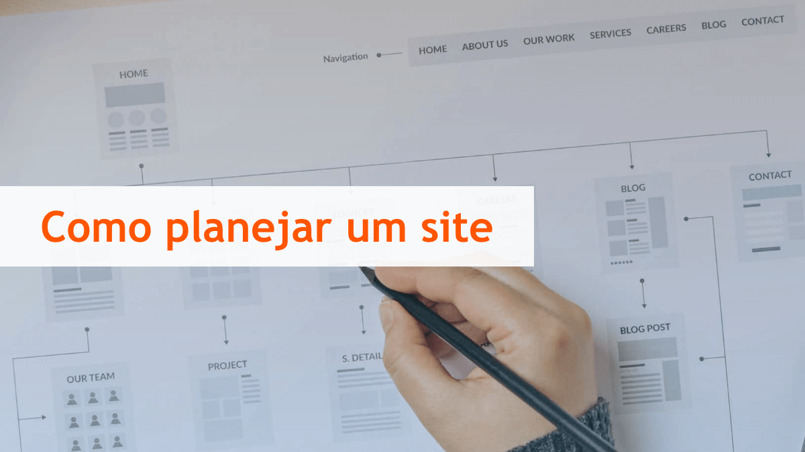

Planejamento para criação de sites
Guia de criação de sites
Se você está prestes a embarcar na emocionante jornada de criar um site, está no lugar certo! Este guia abrangente irá orientá-lo passo a passo no processo de construção de um site de sucesso. Seja para sua empresa, projeto pessoal ou blog, as etapas a seguir são essenciais para garantir uma presença online robusta e impactante.
1. Defina Seu Objetivo
Antes de mergulhar na construção do site, é crucial entender o propósito do seu site. Pergunte a si mesmo: o que você deseja alcançar com o site? Seja claro sobre seu público-alvo, metas e a mensagem que deseja transmitir.
2. Escolha o Nome de Domínio e Hospedagem
O nome de domínio é o endereço do seu site na web. Escolha algo relevante, fácil de lembrar e representativo do conteúdo do seu site. Depois, selecione uma hospedagem confiável para garantir que seu site seja acessível e seguro.
3. Escolha uma Plataforma de Construção
Existem várias plataformas de construção de sites disponíveis, como WordPress, Wix, Squarespace e outras. Escolha a que melhor atenda às suas necessidades em termos de funcionalidade, flexibilidade e facilidade de uso.
4. Design Atraente e Responsivo
O design é a primeira impressão do seu site. Certifique-se de que ele seja atraente, fácil de navegar e responsivo em dispositivos móveis. A simplicidade muitas vezes supera a complexidade, então mantenha o design limpo e profissional.
5. Crie Conteúdo Relevante e Cativante
O conteúdo é o rei. Desenvolva conteúdo relevante, interessante e valioso para o seu público-alvo. Utilize boas práticas de SEO para melhorar a visibilidade nos motores de busca.
6. Integre Elementos Multimídia
Torne seu site visualmente atraente incorporando elementos multimídia, como imagens, vídeos e gráficos. Certifique-se de que esses elementos contribuam para a narrativa do seu site.
7. Adicione Funcionalidades Essenciais
Dependendo do propósito do seu site, adicione funcionalidades essenciais, como formulários de contato, opções de compartilhamento social, mapas interativos e outros recursos relevantes.
8. Teste e Otimize o Desempenho
Antes de lançar seu site, teste-o rigorosamente para garantir que todas as páginas e funcionalidades estejam funcionando corretamente. Otimize o desempenho do site para tempos de carregamento rápidos, uma experiência vital para os visitantes.
9. Implemente Estratégias de Segurança
Proteja seu site contra ameaças online implementando medidas de segurança robustas. Isso inclui a escolha de senhas fortes, atualizações regulares de software e a instalação de certificados SSL para garantir uma conexão segura.
Parabéns, você agora tem as bases para construir um site impressionante! Lembre-se de que a criação de um site é um processo contínuo. Monitore o desempenho, atualize o conteúdo regularmente e esteja atento às tendências do design web para garantir que seu site permaneça relevante e eficaz ao longo do tempo.
Recursos Adicionais
- Ferramentas de construção de sites recomendadas
- Tutoriais específicos sobre design, SEO, etc.
- Referências a comunidades online para suporte
Esperamos que este guia seja útil para a construção do seu site. Boa sorte!